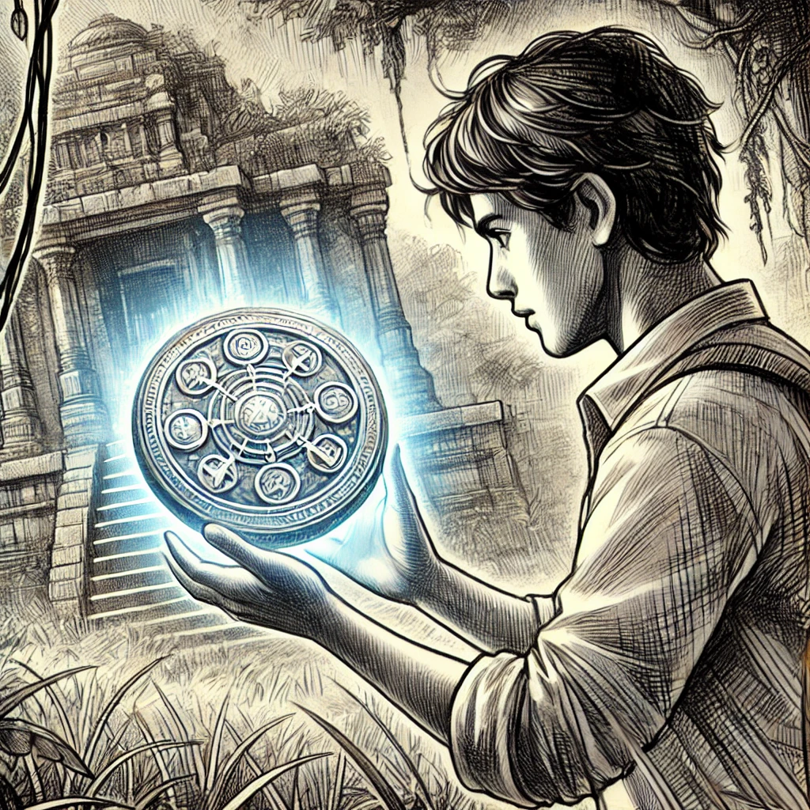
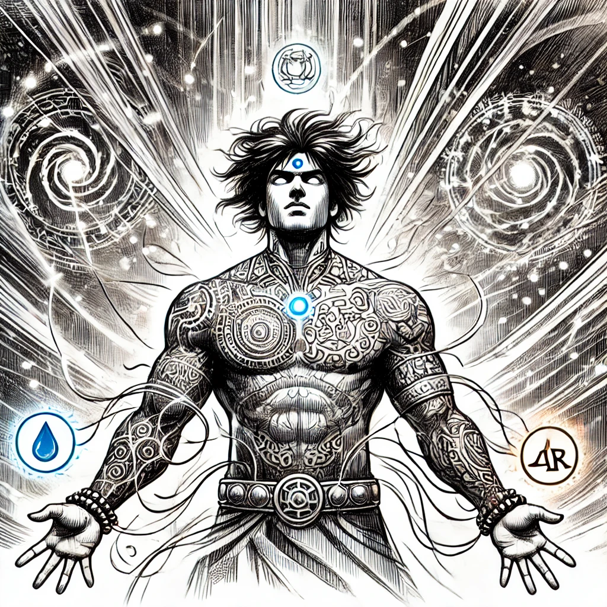
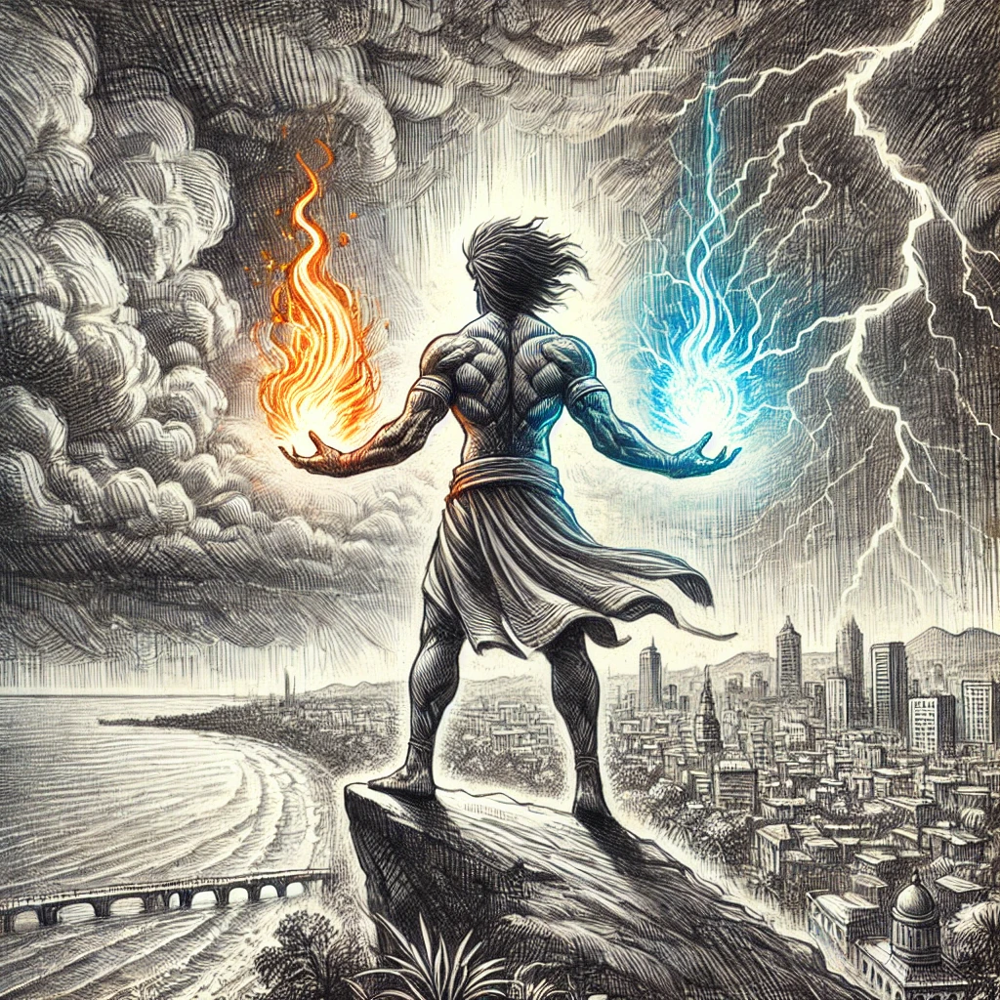
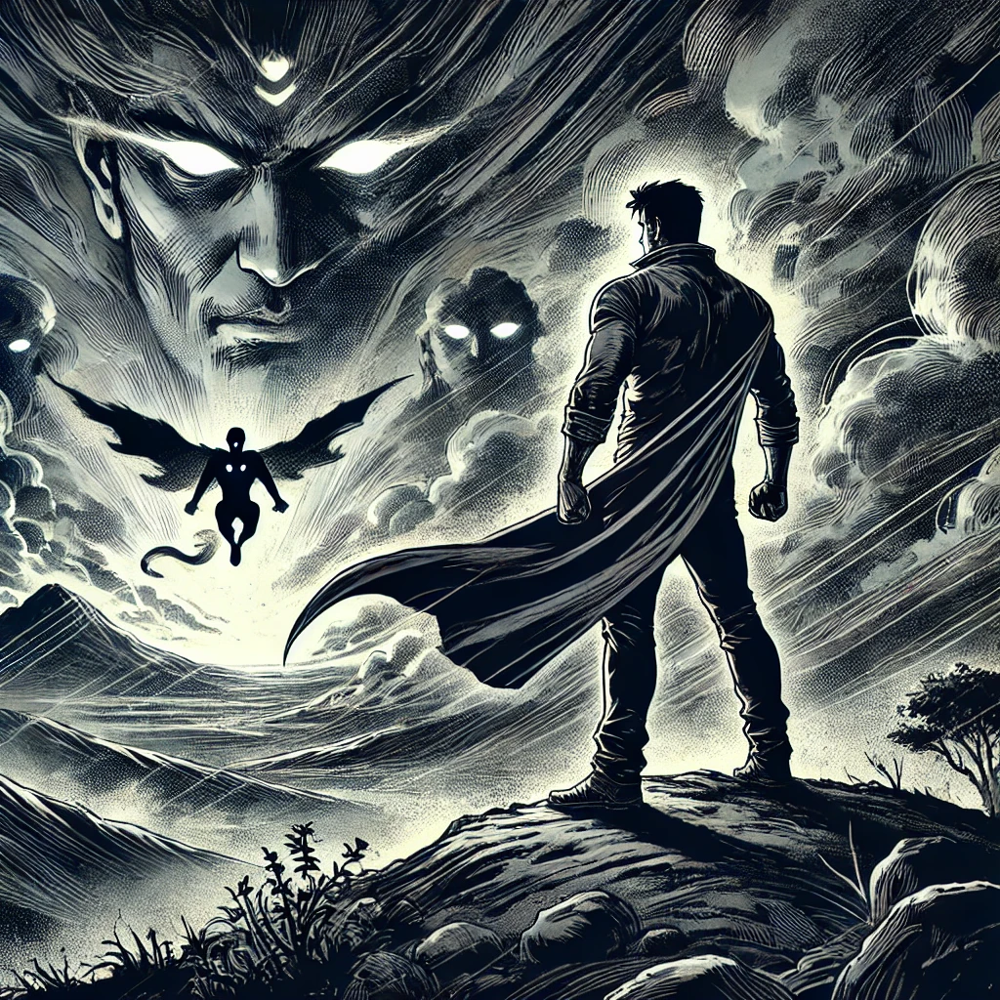

Shakti: The Guardian of the Elements
In the bustling city of Mumbai, a young man named Aarav lived an ordinary life—until one fateful day, when he stumbled upon an ancient amulet hidden in the shadows of an old temple. Little did Aarav know, this discovery would transform him into Shakti, the powerful Guardian of the Elements. Now, with the power of Earth, Water, Fire, Air, and Aether flowing through him, Aarav must protect his city from a dark force that threatens to destroy everything.
Chapter 1: The Discovery
While walking home through the crowded streets of Mumbai, Aarav felt an unusual pull towards a forgotten part of the city. Following his instincts, he discovered an ancient temple overgrown with vines and time. Inside, he found a glowing amulet, its surface covered in mysterious symbols. As Aarav reached out to touch it, the amulet glowed even brighter and latched onto him, binding its power to his very soul.
Chapter 2: The Transformation
As soon as Aarav touched the amulet, he was enveloped in a brilliant light. The symbols on the amulet began to glow on his skin, marking him with the power of the elements. Aarav could feel the strength of the Earth beneath his feet, the rush of Air around him, the heat of Fire in his hands, the cool touch of Water, and the spirit of Aether connecting it all. He had become Shakti, the Guardian of the Elements, destined to protect the world from any threat.
Chapter 3: The Threat
Shakti's powers awakened just in time, for a great danger was approaching. As he stood on a hill overlooking Mumbai, he saw dark storm clouds gathering over the city. This was no ordinary storm—it was the work of an ancient evil spirit, intent on bringing chaos and destruction. Shakti could feel the elemental forces within him stirring, ready to defend the city from this dark menace.
Chapter 4: The Battle

The battle between Shakti and the ancient spirit was fierce. The spirit towered above him, a being of pure darkness with glowing red eyes, and unleashed its fury upon the city. But Shakti was undaunted. Using the power of the elements, he created barriers of Earth to shield the innocent, summoned storms of Wind to push back the spirit, and launched Fire and Water to weaken its dark energy. The ground shook, and the sky crackled with energy as the two forces clashed.
Chapter 5: A New Beginning
After a long and exhausting battle, Shakti managed to drive the ancient spirit away. But as the storm clouds began to part, he felt a strange, cold breeze. Looking up, he saw shadowy figures in the distance, their eyes glowing eerily in the dark sky. A deep voice whispered, "This battle was only the beginning..." Shakti knew then that a greater challenge awaited him. The true test of his powers was yet to come, and he had to be ready for whatever darkness was on the horizon.
© 2024 Harsh Rathi & pikapopoi